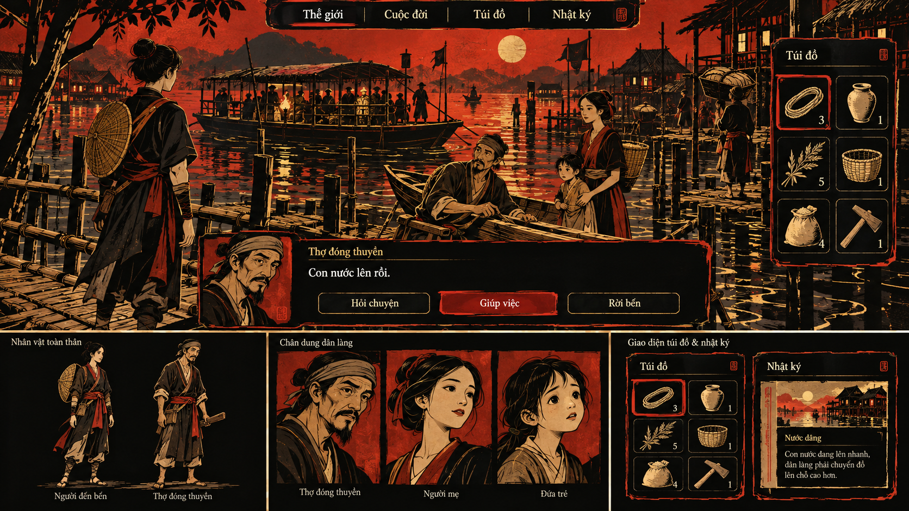

01 / A
Sơn mài sống
Thử hình nhân vật dứt khoát, mảng màu sâu, chân dung có nét khắc và UI như những tấm sơn mài có điểm nhấn ánh kim.
Muốn xem: nhân vật có riêng biệt, vật phẩm dễ nhận và chữ còn rõ trong ngôn ngữ giàu tương phản này?
ĐỒ HỌA XUYÊN SUỐT THẾ GIỚI VÀ CON NGƯỜI
Sơn mài, phù điêu đồng hay mực sống: thử cách một phong cách đi từ cảnh chơi tới nhân vật, chân dung, vật phẩm và giao diện.
Bản concept tổng thể · UI trong ảnh là minh họa

Sơn mài thử nối mảng đen, sắc son, ánh kim và nét khắc giữa cảnh, trang phục, gương mặt và các khung giao diện.
Toàn bộ giao diện game nằm trong ảnh raster. Chỉ các nút xem ảnh của trang này có tương tác.
Chưa tải được ảnh. Kiểm tra thư mục assets của bản thử nghiệm 09.
Đang xem bản concept A.
Đổi bản bằng A / B / C hoặc phím 1 / 2 / 3. Mở toàn khung hoặc ảnh gốc để xem chữ, chân dung và biểu tượng lớn hơn. Cỡ chữ trang xem không thay chữ đã nằm trong ảnh.
THẾ GIỚI / NHÂN VẬT / CHÂN DUNG / VẬT PHẨM / UI
Quan sát nét, hình khối, chất liệu và phân lớp thông tin có liên kết các phần trong mỗi bản hay không. Khung trang này giữ trung tính; giao diện được đề xuất nằm trong từng artwork.
01 / A
Thử hình nhân vật dứt khoát, mảng màu sâu, chân dung có nét khắc và UI như những tấm sơn mài có điểm nhấn ánh kim.
Muốn xem: nhân vật có riêng biệt, vật phẩm dễ nhận và chữ còn rõ trong ngôn ngữ giàu tương phản này?
02 / B
Thử cùng một cấu trúc nổi/chìm cho cảnh, gương mặt, biểu tượng và menu; sắc đồng và lớp gỉ trở thành vật liệu thị giác.
Muốn xem: con người có giữ cá tính và cảm xúc, UI có phân cấp mà không lẫn vào họa tiết?
03 / C
Thử mảng đen/trắng, nét biểu cảm và điểm đỏ nối hình người, chân dung hội thoại, vật phẩm và khoảng trống của giao diện.
Muốn xem: hình và thông tin có dễ đọc khi màu được tiết chế, các trạng thái có rõ bằng cả hình lẫn chữ?
Vòng mới bổ sung cách nghĩ cho cả game. Các bản trước vẫn có thể được xem lại hoặc kết hợp; chưa tự xếp hạng, loại hoặc chốt thay bạn.